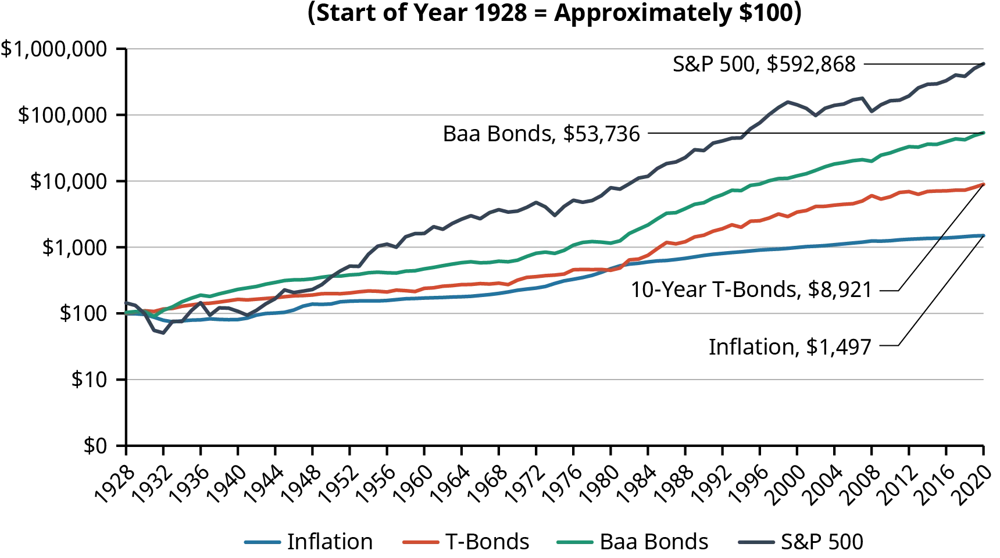
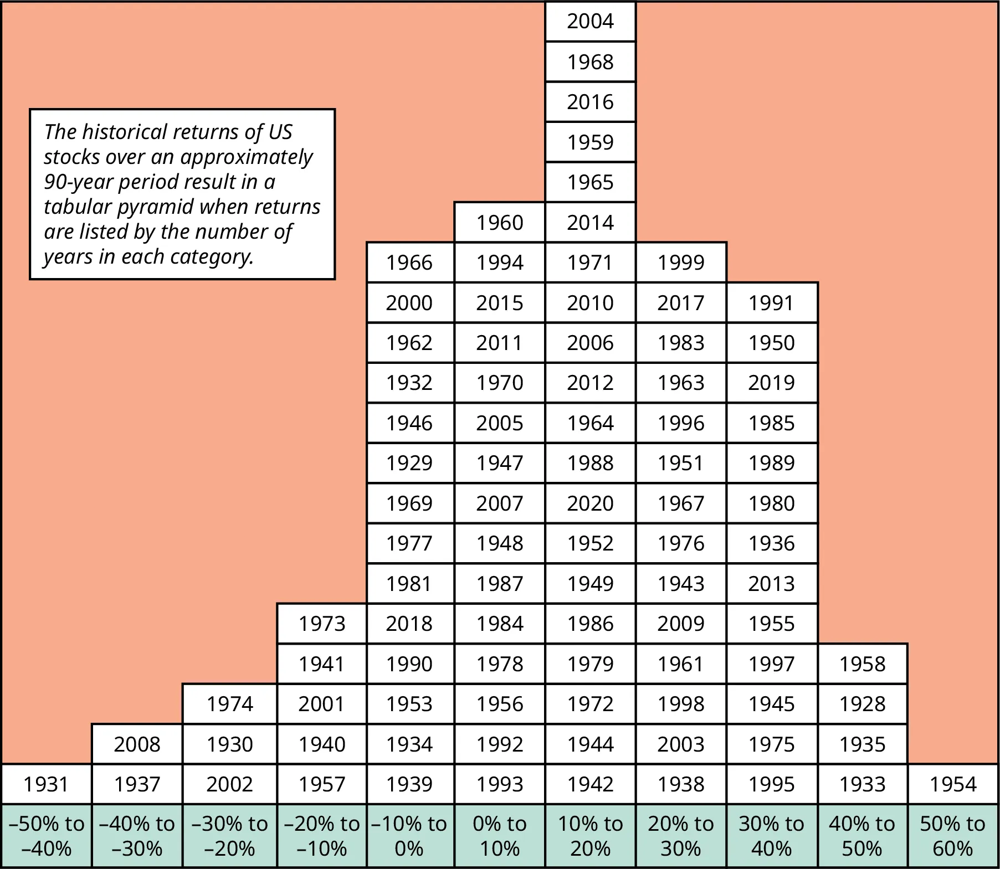

5 Akcie a jejich oceňování
- Dahlquist, J. R., &; Knight, R. (2022). Principles of finance. OpenStax, Rice University. https://openstax.org/details/books/principles-finance
- Chapter 11 - Stocks and Stock Valuation
- Chapter 12 - Historical Performance of US Markets
Výstupy z učení:
- Definovat a vypočítat ukazatele P/E a P/B a pochopit jejich použití při určování relativního ocenění společnosti.
- Porozumět modelu s konstantním růstem dividend, poznat jeho výhody a nevýhody.
- Znát model diskontovaných peněžních toků (DCF) a jeho aplikace.
- Rozlišovat preferované a kmenové akcie, včetně jejich ocenění.
- Rozumět pojmu teorie efektivních trhů, operativní efektivnosti a informační efektivnosti na trzích.
5.1 Investování do akcií
- Akcie představují vlastnický podíl v dané společnosti a s tím i nárok na budoucí zisky a peněžní toky společnosti.
- Akcie umožňují oddělení vlastníků od managementu.
- Na rozdíl od dluhopisů akcie nemají datum splatnosti, nominální hodnotu ani zaručené kupónové platby.
- Akcie mohou vyplácet dividendy, ale ty nejsou garantovány a mohou se měnit na základě rozhodnutí představenstva společnosti.
- Investování do akcií je obecně rizikovější než dluhopisy nebo jiné investice s pevným výnosem, protože je zde větší nejistota.
- S větším rizikem je spojen i potenciálně vyšší výnos v podobě dividend nebo kapitálového zhodnocení dané akcie.
5.1.1 Typy akcií
- Kmenové akcie (common stock):
- představují vlastnický podíl ve společnosti
- podíl na řízení a rozhodování
- podíl na zisku (dividendy)
- podíl na likvidačním zůstatku
- Prioritní akcie (preferred stock):
- nepředstavují vlastnické právo ve firmě
- oproti kmenovým akciím mají přednostní právo na zisky a majetek společnosti
- zpravidla vyplácejí pravidelnou fixní dividendu
- většinou neobsahují hlasovací právo
- nemají dobu splatnosti
5.1.2 Dividendy
- Firma rozhoduje jestli bude vyplácet dividendy a v jaké výši (většinou čtvrtletně).
- Snaha o stabilní dividendovou politiku.
- Občas může být vyplacena mimořádná dividenda.
- Dividendy většinou v penězích (cash dividend), ale mohou být i formou akcií (stock dividend).
- Stock dividend souvisí s pojmem štěpení akcií (stock split), kdy firma rozdělí své stávající akcie na více kusů při zachování celkové tržní kapitalizace.
- Hlavní rozdíl je v tom, že stock dividend zahrnuje vydání nových akcií zatímco u stock split je každá akcie rozdělena na více kusů, ale nejedná se o emisi nových akcií, přičemž v obou případech zůstává tržní kapitalizace konstantní.
- Př. Držíte 10 akcií, každá má hodnotu 80. Firma udělá 2-for-1 split. Takže ve výsledku máte 20 akcií, ale každá stojí 40. Bohatství je pořád stejné, jen rozdělené na víc dílů.
- Místo výplaty dividend se může firma rozhodnout nakoupit svoje vlastní akcie (stock buyback).
- Výsledkem je zvýšení cen akcií a zpravidla daňové výhody pro akcionáře.
- Buyback lze také použít v situaci, kdy firma považuje své akcie za podhodnocené.
5.1.3 Rizika investování do akcií
- Obecně rizikovější než dluhopisy, proto investoři očekávají vyšší výnosy.
- V případě likvidace společnosti jsou běžní akcionáři na posledním místě.
- Nejistá výše budoucích dividend.
- Možné problémy s managementem.
- Vyšší volatilita cen akcií ve srovnání s cenou dluhopisů.
5.2 Poměrové ukazatele
- Investoři používají různé metody pro hodnocení společností a oceňvání jejich akcií.
- Často se jedná o studium finančních výkazů a výpočet finančních ukazatelů.
5.2.1 Poměr cena/zisk (P/E, Price-earnings ratio)
- P/E je klíčovým ukazatelem používaným k posouzení tržní hodnoty akcií společnosti.
- P/E se vypočítá jako: \[ \text{P/E} = \frac{\text{Cena za akcii}}{\text{Zisk na akcii}} \]
- P/E reprezentuje cenu, kterou investor platí za jednotku současného nebo budoucího zisku společnosti.
- P/E může být spočítáno historicky (na základě minulého zisku) nebo prediktivně (na základě očekávaných budoucích zisků).
- Například, pokud je cena akcie společnosti $24.00 a její zisk na akcii je $4.00, její P/E poměr je: \[ \text{P/E} = \frac{\$24.00}{\$4.00} = 6 \]
- Výsledek ukazuje, že investoři jsou ochotni platit až šest dolarů za každý dolar zisku.
- P/E společnosti by měl být srovnáván s historickým P/E nebo s P/E jiných společností ve stejném odvětví.
- Vysoké P/E může naznačovat, že společnost je nadhodnocena, zatímco nízké P/E může signalizovat podhodnocení a investiční příležitosti.
- Prohlédněte si 90letý historický průměr P/E pro index S&P 500 https://openstax.org/r/90-year_historical_average_P/E
5.2.2 Poměr cena/účetní hodnota (P/B, Price-to-book ratio)
- Poměr cena/účetní hodnota (P/B) je běžný finanční ukazatel používaný k hodnocení tržní hodnoty společnosti vzhledem k její účetní hodnotě.
- Tržní hodnota je aktuální cena všech akcií společnosti, zatímco účetní hodnota představuje hodnotu společnosti po likvidaci aktiv a splacení závazků.
- P/B se vypočítá jako: \[ \text{P/B} = \frac{\text{Cena za akcii}}{\text{Účetní hodnota na akcii}} \]
- P/B se často používá k hodnocení firem ve finančním sektoru, ale má omezení v nezahrnování nehmotných aktiv, jako jsou patenty, ochranné známky a autorská práva.
- Nízké P/B (méně než 1) by mohlo naznačovat, že akcie je podhodnocena, zatímco vysoké P/B (větší než 1) by mohlo naznačovat nadhodnocení.
- P/B poměr by měl být použit v souvislosti s dalšími ukazateli a srovnán s P/B poměry společností ve stejném odvětví pro komplexní analýzu.
5.3 Dividendové diskontní modely
- Dividendový diskontní model (DDM) se používá k ocenění akcie na základě současné hodnoty jejích budoucích dividend.
- Model s nulovým a konstantním růstem má omezení kvůli předpokladu o fixní dividendě a růstových sazbách.
- Tyto modely jsou nejvhodnější pro akcie se stabilní historií vyplácení dividend.
5.3.1 Gordonův růstový model
Nejběžnějším DDM je Gordonův růstový model (konstatní růst dividend), který používá následující vzorec: \[ \text{Hodnota akcie} = \frac{D_0 (1+g)}{r - g} = \frac{D_1}{r - g} \]
Kde \(D_0\) je současná roční dividenda, \(r\) je požadovaný výnos, a \(g\) je odhadovaná budoucí sazba růstu dividend.
5.3.2 Dividendový diskontní model s nulovým růstem
- Model s nulovým růstem předpokládá, že budoucí dividendy budou stejné navždy.
- Jeho vzorec je podobný výpočtu současné hodnoty perpetuity: \[ \text{Hodnota akcie} = \frac{\text{Roční dividendy}}{\text{Požadovaná míra výnosu}} = \frac{D}{r} \]
5.3.3 Numerický příklad
- Předpokládejme, že společnost právě vyplatila dividendu \(D_0\) ve výši \(\$2\), očekává se růst dividend \(g\) ve výši 5% ročně. Vaše požadovaná míra výnosu \(r\) je 10%. Cena akcie se vypočítá následovně:
\[ P = \frac{2.00 (1 + 0.05)}{0.10 - 0.05} = \frac{2.10}{0.05} = \$42.00 \]
- Podle DDM modelu by cena akcie měla být $42,00.
- Pokud je tržní cena nižší než tato hodnota, může to být dobrá investiční příležitost.
5.3.4 Model s proměnným růstem dividend
- Model s proměnným růstem dividend je realističtější model, který předpokládá, že společnost a její akciová hodnota projdou různými fázemi růstu.
- Tento model vypočítává současnou hodnotu pro každé období růstu a poté je sečte, aby získal vnitřní hodnotu akcie.
- Např. máme společnost X, která za poslední rok vyplatila dividendu $2.00. Očekáváme růstovou míru dividendy 5% pro další čtyři roky a následně stabilizaci na růstu 3%. Požadovaná výnosová míra je 8%. V následující tabulce je zobrazen výpočet hodnoty akcie.
| Rok | Růst % | Dividenda ($) | Hodnota po 4. roce ($) | Diskontní faktor pro 8% | Současná hodnota dividendy ($) |
|---|---|---|---|---|---|
| 0 | 5% | 2.00 | |||
| 1 | 5% | 2.10 | 1.0800 | 1.9444 | |
| 2 | 5% | 2.21 | 1.1664 | 1.8904 | |
| 3 | 5% | 2.32 | 1.2597 | 1.8379 | |
| 4 | 5% | 2.43 | 1.3605 | 1.7869 | |
| 5 | 3% | 2.50 | 50.07886 | 1.4693 | 35.7870 |
| \(Celkem:\) | 43.2466 |
\[ \text{Hodnota po 4. roce} = \frac{2.43 (1 + 0.03)}{0.08 - 0.03} = 50.07886 \]
- Vnitřní hodnota akcie by byla součet současných hodnot dividend, tedy $43.2466.
5.3.5 Výhody a omezení DDM
- Model je nejužitečnější pro ocenění společností s dlouhou a konzistentní historií dividend, protože se opírá o očekávané budoucí výplaty a růst dividend.
- DDM poskytují matematický vzorec, což snižuje šanci na nesprávný výklad nebo subjektivitu.
- Společnosti mohou udržovat výplatu dividend, i když to dlouhodobě není výhodné, aby se vyhnuly volatilitě akciových cen.
- Aplikace DDM na společnosti s omezenou historií dividend nebo na ty v odvětvích s vysokým rizikem může vést k nepřesnostem.
- Jedním z hlavních omezení DDM je jejich neschopnost ohodnotit společnosti, které nevyplácí dividendy, což je trend zejména u mladých technologických společností.
- Cena akcie podle DDM je vysoce citlivá na změny jednotlivých parametrů v rovnici.
5.4 Model diskontovaného cash flow (DCF)
- Investoři při nákupu akcií očekávají budoucí příjmy z divident a zisk z prodeje akcií.
- Prodejní cena akcie by ideálně měla být vyšší než nákupní cena, což vede ke kapitálovému zisku.
- Kapitálový zisk je vyšší, pokud akcie nevyplácí dividendu.
- Navíc pokud jsou akcie drženy delší dobu, platí se ve většině zemí nižší daně ze zisku z jejich prodeje (v ČR po 3 letech daň 0%).
- Krátkodobé zisky z cenných papírů jsou zdaněny podle běžných sazeb daně z příjmů (v ČR 15%).
- Model diskontovaného cash flow (DCF) je často využíván u firem, které nevyplácí dividendy.
- Model DCF vypočítává současnou hodnotu očekávaných cash flow společnosti.
- Model DCF je reprezentován následujícím rovnice:
\[ \text{Hodnota akcie} = \frac{CF_1}{(1+r)^1} + \frac{CF_2}{(1+r)^2} + \frac{CF_3}{(1+r)^3} + \dots + \frac{CF_n}{(1+r)^n} \]
- kde:
- \(CF_n\) je očekávaný peněžní tok v období \(n\),
- \(r\) je diskontní sazba (také známá jako požadovaná míra výnosu),
- \(n\) je počet období.
- Alternativně lze model rozšířít o predikce cash flow do nekonečna s využitím perpetuity.
- Přidá se poslední člen, tzv. terminal cash flow (TCF), který představuje poslední predikované cash flow, které dále roste konstantním tempem růstu.
- Model DCF je poté reprezentován následujícím rovnicí:
\[ \text{Hodnota akcie} = \frac{CF_1}{(1+r)^1} + \frac{CF_2}{(1+r)^2} + \frac{CF_3}{(1+r)^3} + \dots + \frac{\frac{TFC}{r-g}}{(1+r)^{n-1}} \]
5.4.1 Výhody a omezení modelu DCF
- Mezi hlavní výhody je možnost ocenit všechny firmy bez ohledu na jejich dividendovou politiku.
- Cash flow firmy se v účetnictví hůře zkresluje než zisk, takže model není tak citlivý na manipulace s účetnictvím.
- Společnosti však mohou například uměle vytvářet pozitivní cash flow prodejem aktiv, což není dlouhodobě udržitelné.
- Přesnost modelu DCF závisí na přesnosti jeho vstupů, včetně odhadů cash flow a diskontní sazby.
- Použití různých metod pro oceňování společností snižuje riziko nepřesností.
5.5 Prioritní akcie
- Prioritní akcie nabízejí držitelům přednostní právo na majetek společnosti.
- Mají stanovenou konstantní dividendu, která je vyplácena akcionářům.
- Jako kmenové akcie nemají stanovenou dobu splatnosti.
- Na rozdíl od kmenových akcií neposkytují hlasovací právo.
- Mnoho preferovaných akcií je kumulativních, což znamená, že jakékoli vynechané dividendy se stávají závazkem, který společnost musí nakonec vyplatit preferovaným akcionářům.
- Nekumulativní preferované akcie ztrácejí nevyplacené dividendy navždy.
- Preferované akcie lze v budoucnu převést na obyčejné akcie.
- Preferované akcie jsou více podobné dluhopisům kvůli jejich konstantním dividendám, což usnadňuje oceňování pomocí dividendových modelů.
- Vnitřní hodnotu preferovaných akcií lze určit pomocí vzorce na perpetuitu.
\[ \text{Hodnota akcie} = \frac{\text{Dividenda}}{\text{Požadovaná míra výnosu}} \]
5.5.1 Numerický příklad
- Firma X právě vydala preferované akcie (kumulativní) se jmenovitou hodnotou $100 a roční dividendou 7%.
- Aktuální cena preferovaných akcií je $35 za akcii.
- Jaká je výnosnost těchto preferovaných akcií?
Řešení:
- Prvním krokem je určení roční dividendy:
\[ \$100 \times 0.07 = \$7.00 \]
- Nyní použijeme výše uvedený vzorec k vypočítání míry výnosu:
\[ r = \frac{\$7.00}{\$35.00} = 0.20 \text{ neboli } 20\% \]
5.5.2 Rozdíly mezi prioritními a kmenovými akciemi
| Kmenové akcie | Prioritní akcie |
|---|---|
| Dividendy vyplaceny až po prioritních akcionářích | Jako první dostanou dividendy |
| Dividendy jsou variabilní a mohou narůst nebo klesat | Konstantní dividenda |
| Vysoký potenciál růstu hodnoty vázán na výkon společnosti | Omezená možnost kapitálového zhodnocení |
| Při likvadaci vyplaceni jako poslední | Při likvidaci v pořadí podobně jako držitelé dluhopisů |
| Poskytují držiteli hlasovací právo | Bez hlasovacího práva |
| Žádná akumulace nevyplacených dividend | Pokud jsou kumulativní, nevyplacené dividendy se stávají závazkem firmy |
5.6 Historický vývoj akcií
- Dow Jones Industrial Average (DJIA) a S&P 500 jsou nejčastěji citovanými akciovými indexy, přičemž změny v obou jsou silně korelované.
- Indexy mají za cíl reprezentovat výnosnost celého akciového trhu.
- Ke konci roku 2020 měly firmy zahrnuté v indexu S&P 500 kombinovanou tržní kapitalizaci 33,4 bilionu dolarů, což je přibližně 66 % odhadované tržní kapitalizace amerických akcií ve výši 50,8 bilionu dolarů.
- Historie kapitálových trhů ukazuje, že průměrný výnos z akcií výrazně předčil jiné třídy finančních cenných papírů, jako jsou státní dluhopisy, korporátní dluhopisy nebo peněžní trh.
- Často se klade důraz na alokaci aktiv před výběrem konkrétních cenných papírů, protože rozhodnutí investovat do akcií namísto dluhopisů obvykle přináší větší dlouhodobý zisk.
- Akcie malých společností historicky realizovaly větší průměrné roční výnosy, i když s větší variabilitou, ve srovnání s velkými společnostmi zastoupenými v indexu S&P 500.
- V poslední době byl rozdíl ve výnosech mezi akciemi malých a velkých společností méně výrazný. Od roku 1980 do roku 2020 průměrný složený roční výnos indexu Wilshire US Small-Cap dosáhl 12,13 %, ve srovnání s průměrným výnosem indexu Wilshire US Large Cap, který byl 11,82 %.
| Asset Class | Nominal Average Annual Returns 1981–2020 | Standard Deviation of Returns 1981–2020 |
|---|---|---|
| Large company stocks | 12.64% | 16.06% |
| Baa bonds | 10.34% | 7.67% |
| 10-year T-bonds | 8.21% | 9.92% |
| US T-bills | 3.94% | 3.39% |
| Inflation | 2.93% | 1.76% |


- Kalkulačky pro nalezení výnosů ve vybraných obdobích pro americké akcie, dluhopisy a inflaci. https://openstax.org/r/6-what-to-invest-in
- Další kalkulačka pro globální akciové trhy. https://openstax.org/r/returns-of-global-stocks
- Globální zpráva o bohatství publikovaná společností Credit Suisse. https://openstax.org/r/global-wealth-report
V období od roku 1980 do poloviny roku 2020 by investice 10 000 dolarů do indexového fondu S&P 500 vynesla investorovi 697 421 dolarů. Avšak pokud by investor zmeškal 5 nejvýkonnějších dní na trhu, snížil by se konečný zůstatek portfolia na 432 411 dolarů. Pokud by zůstal mimo trh během 10 nejlepších dnů, zůstatek by klesl na pouhých 313 377 dolarů, což je méně než polovina výnosu z celého období.
5.7 Teorie efektivních trhů
- Efektivní trhy jsou ty, kde jsou náklady minimální, ceny aktuální a spravedlivé pro všechny obchodníky.
5.7.1 Informační Efektivita
- Teorie efektivních trhů odkazuje primárně na informační efektivitu.
- Informační efektivita odkazuje na rychlost, s jakou se v cenách akcií odráží nejnovější dostupné informace.
- Pokud jsou trhy efektivní, je těžké nebo nemožné dosáhnout konzistentně vyšších než průměrných výnosů.
- Existují i další formy efektivity jako například operační efektivita se vztahuje na rychlost a přesnost zpracování nákupního nebo prodejního příkazu za nejlepší dostupnou cenu.
- Existují tři formy informační efektivnosti trhu:
- Slabá efektivnost
- Veškeré historické informace o tržních cenách a obchodech jsou plně odraženy v aktuálních cenách.
- Tzn. technická analýza nelze použít k překonání trhu.
- Středně-silná efektivnost
- Všechny veřejně dostupné informace jsou promítnuty v cenách.
- Nejen historické ceny, ale všechna dostupná data např. z finančních výkazů, ekonomické faktory, atd.
- Tzn. technická ani fundamentální analýze nelze použít k překonání trhu.
- Silná efektivnost
- Všechny veřejné i neveřejné informace jsou zohledněny v současných cenách.
- Tzn. nelze žádným způsobem překonat trh, ani s využítím interních informací (insider trading).